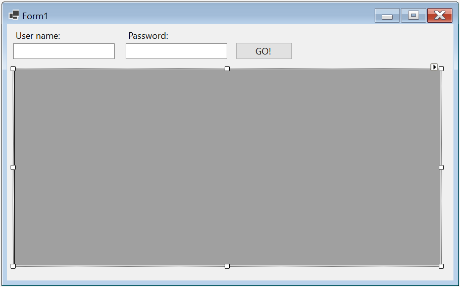
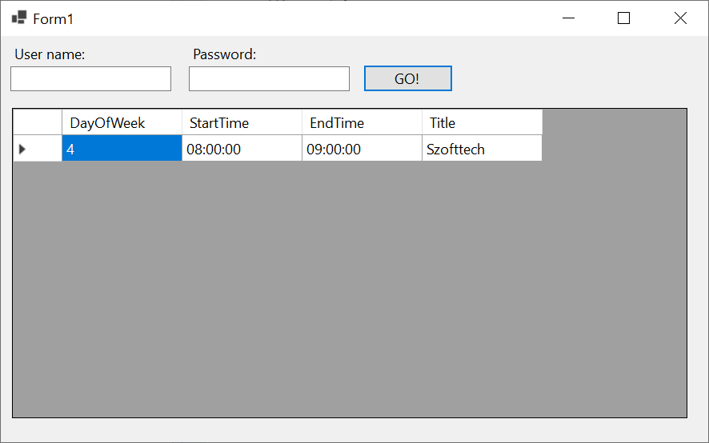
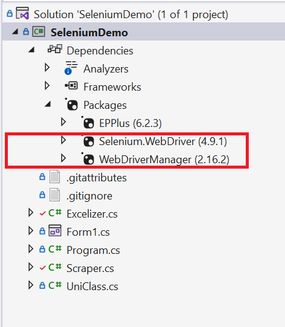

Third Party Package-ek használata
A mai gyakorlat rendhagyó lesz több szempontból is. Egy saját projektet kell létrehozni legalább az egyik mintaprojektben is használt csomag felhasználásával.
A programnyelvek igazi erejét, az ökoszisztéma gerincét, az elérhető csomagok/könyvtárak alkotják. A programozás tulajdonképpen probléma megoldás több szinten, minél absztraktabb módon. Nem kell gépi kódot írnunk, mert vannak magas szintű programnyelvek, nem kell minden dolgot feltalálni a programnyelvekben sem, mert vannak alaposztályok és funkciók, és erre épülnek rá a harmadik féltől származó könyvtárak/csomagok. Miért vesződjünk azzal, hogy egy objektumot JSON-ná konvertáljunk, ha ezt már valaki nagy fáradozással megtette helyettünk? A .NET keretrendszerhez nagyon sokféle csomag érhető el -- akárcsak Python-hoz.
A modern fejlesztői környezet részévé vált a ChatGPT, ezért most a használata nemcsak hogy engedélyezett, de feladat is. Sokkal gyorsabban el lehet érni vele a kívánt eredményt, mint a hivatalos dokumentáció böngészésével. Azonban itt fontos megjegyezni, hogy "A nagy erő, nagy felelősséggel jár." (Pókember). Nem lehet teljesen rábízni magunkat az AI-ra, mert könnyen el tud vinni minket vakvágányra és előfordul, hogy túlbonyolít és halucinál dolgokat.
Röviden a mintaprojektről
A mintaprojekt két könyvtárat használ, a Selenium-mal böngészőt tudunk vezérelni és az EPPlus-sal pedig Excel mukafüzeteket lehet kódból generálni. Az alkalmazás
- felmegy a neptunra,
- bejelentkezik,
- letölti az órarendet,
- és az órarend alapján csinál egy excel fájlt, az órarendünkről.
Tippek a ChatGPT használatához
- Kontextus: Adjuk át minél jobban, hogy mik az elvárásaink és milyen környezetben vagyunk, hagyjunk minél kevesebb dolgot a képzelőerőnek
- Tegyünk fel jól strukturált kérdéseket és ha feladatot adunk, legyünk precízek
- Kérdezzünk bátran és kérdezzünk vissza, ha valamit nem értünk, kiemelve a kérdéses részeket
- Ha változtatunk a kódon miután átvettük akkor a következő kérdésnél adjuk oda a modellnek, hogy jó kóddal dolgozzon
- Ha valami nem jó, pontosítsunk
- Használjunk minél fejlettebb modellt
A mintaprojekt felépítése
Warning
A mintaprojektet nem kell leadni, okulásul és kiindulásul szolgál a lap legalján található leadandó feladathoz!
A felhasznált csomagok
Selenium
(!Hint) Kérdezd meg a ChatGPT-t, hogy mi az a Selenium! [!A Selenium egy olyan eszköz vagy keretrendszer, amely lehetővé teszi a webes alkalmazások automatizált tesztelését és a böngészőalapú műveletek programozását. A Selenium lehetővé teszi a felhasználók számára, hogy felvegyenek teszteket, amelyek az egyes felhasználói eseteket szimulálják, és ellenőrzik, hogy az alkalmazás működik-e a tervezett módon. A Selenium támogatja a legnépszerűbb böngészőket, mint például a Google Chrome, a Mozilla Firefox és az Internet Explorer, és lehetővé teszi a felhasználók számára, hogy automatizáltan töltsenek ki űrlapokat, kattintsanak gombokra, navigáljanak az oldalak között, és még sok más dolgot tegyenek. A Selenium nagyon hasznos lehet a webfejlesztők és tesztelők számára, akik hatékonyabb és megbízhatóbb teszteket szeretnének végrehajtani, valamint a webes alkalmazások fejlesztői számára, akik könnyedén hozzáadhatják a Selenium támogatását az alkalmazásaikhoz. Egy éles projektben nincs lehetőség arra, hogy minden kódváltozatás után manuálisan végigteszteltessünk mindent, hogy nem tört-e el valamit az eszközölt változtatás.]
EPPlus
(!Hint) Kérdezd meg mire jó az EPPlus! [!Az EPPlus egy .NET-ben írt nyílt forráskódú könyvtár, amely lehetővé teszi a Microsoft Excel fájlok olvasását és írását. Az EPPlus alkalmas Excel-fájlok létrehozására, módosítására, olvasására és mentésére is, és támogatja a legtöbb Excel-fájl formátumot. Az EPPlus-nal a fejlesztők programozói módon kezelhetik az Excel-fájlokat, így lehetőségük van arra, hogy a programozás révén generálják az Excel-táblázatokat vagy azok tartalmát. Az EPPlus további előnye, hogy nagyon hatékonyan kezeli a nagy adathalmazokat, és támogatja a diagramok, táblázatok, képek és más elemek beillesztését az Excel-fájlokba. Az EPPlus így kiválóan alkalmas olyan alkalmazások fejlesztésére, amelyek az Excel adathalmazok kezelésére épülnek, és lehetőséget kívánnak adni az adatok vizualizálására és elemzésére.]
A projekt felépítése
(+/-) Első lépésként hozz létre egy Widows Forms App típusú projektet, és az űrlapon helyezz el egy-egy mezőt a Neptun kódodnak és a felhasználónevednek, és egy OK gomot!
Important
Nem szeretnénk, ha a felhasználónév illetve bármilyen jelszó el lenne mentve a forráskódban! Ne írd be lustaságból a TextBox-okba tervezőben, mert bent maradhat, feltölthated bárhova, és egy ilyen feledékenység vállalati környezetben az állásodba kerülhet!
(+/-) Kérdezd meg a ChatGPT-t, hogyan oldható meg az, hogy a jelszó karakterei helyett pöttyök jelenjenek meg egy TextBox-ban!
(+/-) Helyezz el egy DataGridView vezérlőt is az űrlapon, itt tudjuk majd megjeleníteni az adatokat, amiket letöltöttünk! Erről bővebben később!

Három osztályt használunk, a Scraper.cs-be száműztük azt a kódot, ami a böngésző irányításért felel, az Excelizer.cs-be raktuk azt, ami az Excel generálást végzi és van egy UniClass nevű osztályunk, ami az óránknak a modellje.
Note
Azért lett UniClass, mert a class az egy foglalt kifejezés a C#-ban és példányosításnál nem lehetne neki egyszerűen a class nevet adni és félrevezető lehet, de ha bármilyen foglalt kifejezés elé írunk egy @-t, akkor használhatjuk változó névként.
Az UniClass osztály
(+/-) Hozd létre a projektben az UniClass osztályt! Ez egy egyszerű osztály, ami egy óráról tárol infromációt. Ez órarend List<UniClass>. A DayOfWeek tulajdonságban 0-6 ig megmondhatjuk milyen nap van az óránk, a StartTime és az EndTime megadja, mikor kezdődik, illetve mikor van vége. A Title a tárgy címe:
public class UniClass
{
// Teljesen egyszerű osztály, 0-6 ig megmondhatjuk milyen nap van az óránk, mikor kezdődik, mikor van vége és mi a szöveg
// A szövegben van benne a tantárgy neve, hogy ki tartja és melyik teremben van
public int DayOfWeek { get; set; }
public TimeSpan StartTime { get; set; }
public TimeSpan EndTime { get; set; }
public string Title { get; set; }
}
A Scraper osztály
(+/-) Hozd létre az alábbi osztályt a projektben!
public class Scraper
{
private static string _url = @"https://neptun3r.web.uni-corvinus.hu/Hallgatoi/login.aspx";
public static List<UniClass> ScrapeClasses(string username, string password)
{
List<UniClass> classes = new List<UniClass>();
//Ide jön a kód
return classes;
}
}
Az _url a neptununk url-je ez nem fog változni, nyugodtan iderakhatjuk
A ScrapeClasses függvény fogja megszerezni nekünk az óráinkat, de ehhez szüksége van a felhasználónevünkre és jelszavunkra, amit a Form1-ből szerzünk.
A kódját egészítsd ki az alábbiak szerint, hogy legyen legalább egy tesztadatunk, amit meg tudunk jeleníteni:
List<UniClass> classes = new List<UniClass>();
UniClass mintaÓra = new UniClass();
mintaÓra.DayOfWeek = 4;
mintaÓra.Title = "Szofttech";
mintaÓra.StartTime = TimeSpan.FromHours(8);
mintaÓra.EndTime = TimeSpan.FromHours(9);
classes.Add(mintaÓra);
return classes;
A ScrapeClasses hívása a Form1-ből:
(+/-) Rendelj eseménykiszolgálót a gomb kattintás eseményéhez, melyben hívd meg a Sraper osztály statikus ScrapeClasses és jelenítsd meg az órákat a rácsban. A DataGridView DataSouce tulajdonságán keresztül beállítható a lista, amelynek tartalmát szeretnénk megjeleníteni!
List<UniClass> classes = Scraper.ScrapeClasses(textBoxUser.Text, textBoxPassword.Text);
dataGridView1.DataSource= classes;
lustáknak:
var classes = Scraper.ScrapeClasses(textBoxUser.Text, textBoxPassword.Text);
dataGridView1.DataSource= classes;
Ha minden jól megy, valami ilyesmit kéne látni:

Böngésző vezérlése Seleniummal
NuGet csomag telepítése
A NuGet a Visual Studio csomagkezelője. Számtalan ingyenes és fizetős modul érhető el rajta keresztül, és telepíthető pillanatok alatt.
(+/-) Kérdezzétek meg a ChatGPT-t, hogyan kell a Selnium NuGet csomagot telepíteni C# projektbe!
how can i install selenium into a c# project?
(+/-) Telepítsétek a WebDriverManager csomagot is. A Solution Expolrerban is tudjátok ellenőrizni a telepített csomagokat, mostanra a pirossal keretezetteknek kell telepítve lennie:

Minden böngészőhöz külön csomag tartozik, a WebDriverManager pedig segít a böngészőkhöz tartozó bináris állományok automatikus letöltésében.
Böngésző és weblap megnyitása Seleniummal
Az előző kérdésre kapott igen bőbeszédű válasz alapján már ki is egészíthetjük a ScrapeClasses metódust azzal, hogy nyissa meg a Chrome-ot a megfelelő URL-el:
// Minden böngészőre máshogy kell konfigurálni a Selenium motort, it a Chrome-ot használjuk
new WebDriverManager.DriverManager().SetUpDriver(new ChromeConfig());
IWebDriver driver = new ChromeDriver();
// Megnyitjuk a neptunt
driver.Navigate().GoToUrl(_url);
Órarend letöltése Seleniummal
Értelmezd az alábbi kódot! A böngészőben F12-vel megnyíló Developer Tools segítségével vizsgálhatod meg, hogy mely elemekre vagy kíváncsi az adott oldalon.
Important
A Neptun és a Moodle minden tevékenységet loggol. Az alább bemutatott technika etikátlan használója tettenérhető minden olyan oldalon, ahol a felhasználó egyértelműen azonosítható. Az alábbi kódrészéletet egy az egyben használd, NE a Neptunon gyakorloj!
Note
Az alábbi kód összetetten vezérli a böngészőt, a teljes megértésére nincs idő a gyakorlat keretein belül. Az elv megértése a lényeg, szükség esetén a kódminta alapként szolgálhat más feladatok megoldására.
public static List<UniClass> ScrapeClasses(string username, string password)
{
// Minden böngészőre máshogy kell konfigurálni a Selenium motort, it a Chrome-ot használjuk
new WebDriverManager.DriverManager().SetUpDriver(new ChromeConfig());
IWebDriver driver = new ChromeDriver();
// Megnyitjuk a neptunt
driver.Navigate().GoToUrl(_url);
// Ez a két elem az, ahova beírnánk a neptun kódot és jelszót. A driver-rel meg tudjuk találni a weboldalon az elemeket a szellemes By segítségével.
// Itt a felhasználó nevet fogadó inputot a neve alapján választjuk ki, a jelszavasat pedig az id-ja alapján.
var usernameField = driver.FindElement(By.Name("user"));
var passwordField = driver.FindElement(By.Id("pwd"));
// Beíratjuk a motorral a felhasználónevet és jelszót
usernameField.SendKeys(username);
passwordField.SendKeys(password);
// Példányosítunk egy osztályt, aminek az a feladata, hogy megváratja a motort, maximum addig, amennyi a konstruktor második argumentuma
WebDriverWait wait = new WebDriverWait(driver, TimeSpan.FromSeconds(10));
// Itt például addig váratjuk, amíg nem talál egy btnSubmit id-val rendelkező elemet.
// A nyilas dolog benne egy lambda kifejezés, ami tulajdonképpen egy rövidített függvény
// Lesz róla szó bővebben a következő félévben.
var loginButton = wait.Until(driver => driver.FindElement(By.Id("btnSubmit")));
// Rákattintunk a gombra
loginButton.Click();
// Itt a Tanulmányok linket szeretnénk berakni a studiesLink változóba, aminek nem mondjuk meg előre, hogy micsoda
// mert a jobb oldalából következik ez például lehet bármilyen olyan osztály példánya, ami teljesíti az
// IWebElement interfész kritériumait és lehet null, mert van mögötte kérdőjel
// A wait addig váratja a motort, amíg olyan eredményt kap, ami nem null
var studiesLink = wait.Until(driver =>
{
try
{
// Itt XPath alapján választjuk ki az elemet, ebben egyerre benne van a típusa és most a szövege is.
return driver.FindElement(By.XPath("//li[contains(text(), 'Tanulmányok')]"));
}
catch (NoSuchElementException)
{
return null;
}
});
// Létrehozunk egy olyan osztályt, amivel felhasználói mozdulatokat tudunk emulálni.
Actions actions = new Actions(driver);
// Rákattintunk vele a Tanulmányok linkre
actions.MoveToElement(studiesLink).Perform();
var scheduleLink = driver.FindElement(By.Id("mb1_Tanulmanyok_Órarend"));
actions.MoveToElement(scheduleLink).Perform();
// Rákattintunk az Órarend linkre
scheduleLink.Click();
// Megvárjuk míg betölt (az, hogy maga a tábla létezik még nem jelenti azt, hogy a tartalma is fel van töltve)
wait.Until(driver => driver.FindElement(By.Id("c_common_timetable_tabOrarend_body")));
// Altatjuk a függvényt 3 másodpercig, hogy biztosan betöltsön az is, ami benne van
Thread.Sleep(3000);
// Megfogjuk az oszlop elemet, amiben vannak az órák
var days = driver.FindElements(By.ClassName("tg-col"));
List<UniClass> classes = new List<UniClass>();
int d = 0;
// Végigmegyünk minden oszlopon
foreach (var day in days)
{
// A kék óra buborékok mind chip osztállyal rendelkeznek, azzal választjuk őket ki
var classesInDay = day.FindElements(By.ClassName("chip"));
foreach (IWebElement classElement in classesInDay)
{
// Kiválasztjuk az aktuális óra elemének a title attribútumát
string title = classElement.GetAttribute("title");
// Felvágjuk a sortörések mentén
string[] titleParts = title.Split('\n');
// Az időt ' - ' mentén választjuk le
string[] timeRange = titleParts[0].Split(" - ");
string startingTime = timeRange[0].Substring(timeRange[0].LastIndexOf(" ") + 1);
string finishingTime = timeRange[1].Split("\r")[0].Trim();
// Az lesz a szöveg, ami az [Óra] rész után van
string classTitle = titleParts[1].Split("[Óra] ")[1];
// Konstruktor nélkül létrehozunk egy új UniClass-t a szerzett paraméterekkel
classes.Add(new UniClass
{
// A TimeSpan osztály hasonló, mint a DateTime, de ez időintervallumot jelöl.
// Itt odaadjuk a ParseExact függvényének a feldolgozott stringünket és súgunk neki, hogy milyen formában van
StartTime = TimeSpan.ParseExact(startingTime, "h\\:mm", null),
EndTime = TimeSpan.ParseExact(finishingTime, "h\\:mm", null),
Title = classTitle,
DayOfWeek = d
});
}
// Növeljük a d (nap) számlálónkat, később innen fogjuk tudni, hogy melyik nap van az óra
d++;
}
// Becsukjuk a Seleniumot, hogy ne maradjon nyitva a fekete ablak.
driver.Close();
driver.Quit();
return classes;
}
Órarend exportálása Excelbe
(+/-) Telpítsltek az epplus NuGet csomagot is!
(+/-) Hozzátok létre az alábbi osztályt, majd építsétek be a Form1-be, miután megszereztétek a listát az órákkal.
public class Excelizer
{
// Adunk egy tulajdonságot az osztálynak, ez lesz az elérési út
public string Path { get; set; }
// Konstruktorba ezt bekérjük és be is állítjuk
public Excelizer(string path)
{
this.Path = path;
}
// Ez a metódus fogja legenerálni az excel táblát, az alapján az órákat tartalmazó lista alapján, amit kap
public void CreateTimeTable(List<UniClass> classes)
{
// Az EPPLus szeretne pénzt kérni, ha üzleti fejlesztésben van használva a munkájuk, ezért a
// licenszt beállíthatjuk, nem üzletire
ExcelPackage.LicenseContext = LicenseContext.NonCommercial;
// Ami a using blokkba van, az a using blokkból kilépve tisztességesen be lesz csukva
using (var package = new ExcelPackage())
{
// A csomaggal létrehozunk egy munkafüzetet, ebben fogunk dolgozni
var worksheet = package.Workbook.Worksheets.Add("Órarend");
int startHour = 8; // Innen indítjuk a napot
int endHour = 21; // Itt fejezzük be
// Felcímkézzük a sorokat, hogy hány órát jelentenek
for (int hour = startHour; hour <= endHour; hour++)
{
for (int minute = 0; minute < 60; minute += 10)
{
int rowIndex = 2 + ((hour - startHour) * 6) + (minute / 10);
worksheet.Cells[rowIndex, 1].Value = $"{hour:D2}:{minute:D2}";
}
}
// Felcímkézzük az oszlopokat is, minden másodikat, hogy szebb legyen és ki tudjunk hagyni egy picit
// a napok között
worksheet.Cells[1, 2].Value = "Hétfő";
worksheet.Cells[1, 4].Value = "Kedd";
worksheet.Cells[1, 6].Value = "Szerda";
worksheet.Cells[1, 8].Value = "Csütörtök";
worksheet.Cells[1, 10].Value = "Péntek";
//Az első oszlop magasságát 15 pontról 30-ra állítjuk
worksheet.Row(1).Height = 30;
//Kiválasztjuk az első sort és félkövérre állítjuk
var font = worksheet.Cells["1:1"].Style.Font;
font.Bold = true;
// Feltöltjük a munkafüzetet az órákkal
for (int i = 0; i < classes.Count; i++)
{
UniClass uniClass = classes[i];
// Kiszámoljuk a kezdő és záró sor indexet az idő alapján
int startRowIndex = 2 + (((uniClass.StartTime.Hours - startHour) * 6) + (uniClass.StartTime.Minutes / 10));
int endRowIndex = 2 + (((uniClass.EndTime.Hours - startHour) * 6) + (uniClass.EndTime.Minutes / 10));
// Beírjuk a szöveget a cellába
worksheet.Cells[startRowIndex, 2 + uniClass.DayOfWeek*2].Value = uniClass.Title;
// Beállítjuk a sortörést
worksheet.Cells[startRowIndex, 2 + uniClass.DayOfWeek*2].Style.WrapText = true;
// Átméretezzük az oszlopokat (itt más mértékegységet használunk).
// Az oszlop amiben az óra van az 12 széles és 2 szünet lesz mellette
worksheet.Column(2 + uniClass.DayOfWeek*2).Width = 12;
worksheet.Column(2 + uniClass.DayOfWeek * 2+1).Width = 2;
// Beállítjuk, hogy a szöveg a tetejére húzzon
worksheet.Cells[startRowIndex, 2 + uniClass.DayOfWeek*2].Style.VerticalAlignment = ExcelVerticalAlignment.Top;
// Kitöltjük tankönyves nyomtatós stílussal a cellát, természetesen Fuchsiára
var fill = worksheet.Cells[startRowIndex, 2 + uniClass.DayOfWeek*2].Style.Fill;
fill.PatternType = ExcelFillStyle.LightTrellis;
fill.BackgroundColor.SetColor(Color.Fuchsia);
// Összeolvasztjuk az alatta lévő cellákkal, amíg tart az óra
worksheet.Cells[startRowIndex, 2 + uniClass.DayOfWeek*2, endRowIndex, 2 + uniClass.DayOfWeek*2].Merge = true;
}
// Elmentjük a munkafüzetet Orarend.xlsx néven
// Itt a System.IO előtagra szükség van, mert az osztályszintű elérési út is Path!
package.SaveAs(new FileInfo(System.IO.Path.Combine(this.Path, "Orarend.xlsx")));
}
}
}
Leadandó feladat
Warning
Csak ezt kell leadni gyakrolat végén!
(+/-) Építs olyan alkalmazást, mely tetszőleges weblapról legyűjti az USD/HUF pillanatnyi árfolyamát!